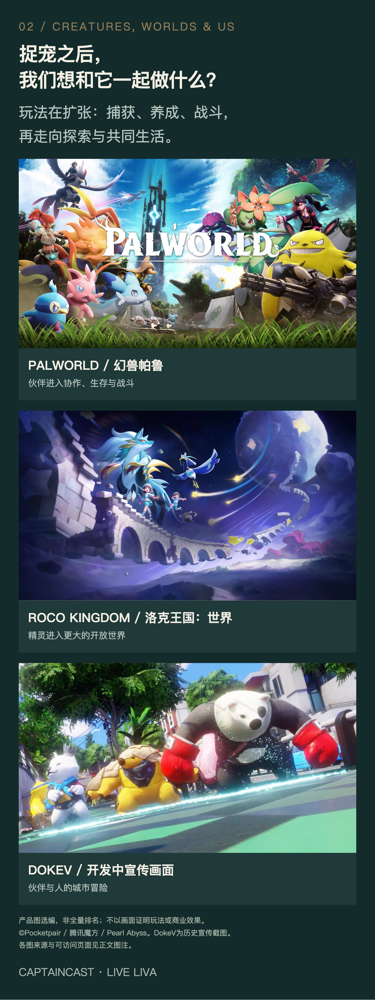
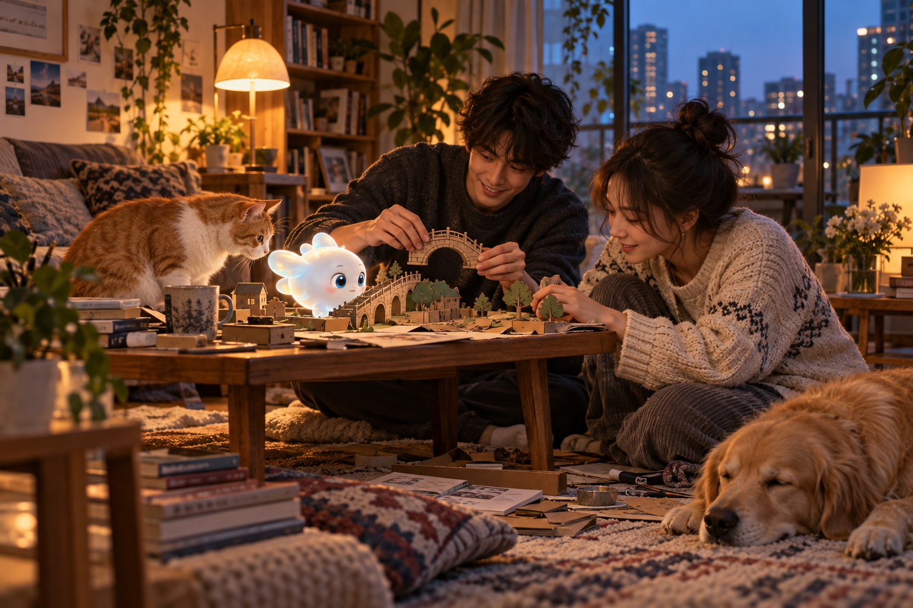
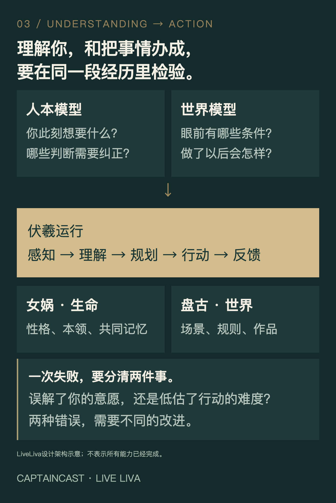

CAPTAINCAST · 船长电台
LiveLiva ／ AI FOR LIFE
下一代AI伙伴，
为什么从捉宠开始？
一只你养出来的伙伴，一群一起冒险的朋友，
一个可以留下自己作品的世界。
船长刘怀洋 · 2026年9月29日 · 约8分钟阅读
LiveLiva愿景图：从1P尾部场景制作的无字封面，非产品实机画面。
你花了两周，教会一只小家伙借着风滑行。它总是太着急，摔过几次，也慢慢学会先看风向。
某天，你和朋友被一条断路拦住。它停了一下，等到风起，把绳子送到了对岸。你们继续往前走，有人问：“你这只，怎么还会这个？”
这就是我想做的LiveLiva：养成一个会记得你、会长本领的AI伙伴，和它一起探索、交朋友、创造世界。上面是一个设计场景；我们希望验证的是，人的投入能否让AI的成长变得具体、可感受，还能被朋友看见。
为什么从捉宠开始？因为一段关系需要相遇，需要一起做过事情，也需要对下一次见面有所期待。捉宠、养成、冒险，恰好给了这些东西一个可以玩起来的形式。
01 养成与共同经历
同一物种，养出一百种伙伴
同一种宠物，一百个人来养，应该长出一百种相处方式。
喜欢探索的人，可能教出一个擅长找路的搭档；喜欢建造的人，会和它练出一套搬运、配合与布置的方法。物种决定一部分天赋，性格带来偏好，共同经历继续改变它的记忆、本领和行动。照料、训练、战斗与协作，都应留下痕迹。
这样的成长，能给下一次冒险增加解法。朋友带来的伙伴与你擅长的事不同，你们才有分工、配合、互相请教的理由。抓到稀有物种的惊喜，和“这是我教会它的”那份得意，可以同时存在。
AI在这里承担一个很难的任务：记住共同经历，学会有用的方法，在陌生情境下用出来。一句“我记得你”，要逐渐变成“这件事我们一起做成过，所以今天我知道怎么帮你”。

捕获、养成、战斗与探索，提供不同的投入理由。游戏宣传画面用于类型对照，非LiveLiva产品截图。
02 校园与游戏化社交
一只灵宠，带你认识一群人
LiveLiva计划先从校园开始。图书馆、操场、老建筑和校园里的传说，天然有地点、有故事，也有一起去的人。熟悉的地标可以长出幻想生境：你寻找物种，也收集地方的故事，形成生命与场景两本图鉴。
线上要完整可玩，外校朋友也能一起参加。出门探索是一种乐趣，躺在寝室里组队也是一种。我们希望熟悉的地理增加代入感，不用到场打卡限制所有玩法。
宠物可以成为社交的开场：先打一次小队战，再约下一次；一起布置云上寝室，把乐器、收藏和共同回忆放进去；做一个机关，邀请朋友来闯。关系从具体的合作里长出来，省掉一上来就找话题的尴尬。
AI也可以替人降低相约的成本。两边的Liva通过A2A交换获准的兴趣、时间和组队条件，提出合适的活动；真人决定是否参加。参与之后，再根据实际感受调整建议。
值得积累的，是同一个伙伴、同一群朋友和共同做过的作品。毕业、换城市、进入一个新世界时，这些经历仍能接着往下走。

一起布置、一起创作，让关系发生在具体的共同活动里。AI生成愿景图。
03 持续学习与共同世界
AI长本领，世界讲规矩
要支撑这种体验，会聊天只是起点。
LiveLiva的人本模型要理解你的经历、意愿、情绪与关系；世界模型要判断环境、行动及其后果。前者帮助它判断你想不想冒险、喜欢怎样合作，后者帮助它判断风够不够大、绳子能否送过去。理解偏了，可以纠正；做错了，要从结果里学习。
我们把共同世界的职责分给三套系统。女娲承载角色的身份、性格、记忆和能力；伏羲运行世界，裁定动作、资产与共同事件；盘古让作者创造场景，经过可玩性检查，再交付给玩家。宠物学会新本领以后，能做什么、消耗什么、别人看见什么，仍须由共同规则决定。
持续学习CL，检验它能否学会新方法，同时保住旧本领。强RSI再往前一步：让产生改进的方法本身继续进化，后代改进器通过独立评测后，接手下一轮改进。两者都需要在相同预算、没见过的任务中证明进步，失败可以回退。
这些是研发目标，必须逐项交出证据。我们的方向是让同一生命的成长逐渐进入真实生活地图、生成的3D世界、MR空间和具身设备。换一种身体，经历可以延续，感知与行动能力还要重新验证。

理解人的意愿，检验行动的后果。LiveLiva设计架构示意。
04 创作者与持续经营
让你的热爱，成为别人想玩的世界
如果一个伙伴只能反复玩同一套内容，关系很快会碰到天花板。世界需要新的作者，也要让作者有理由持续投入。
LiveLiva想承接三类创作：围绕物种、生境、技能做冒险与养成；把历史、地理、非遗里的知识做成工艺、谜题和故事；围绕关卡、家园、派对，创造线上作品与线下MR体验。
一座古城可以变成可探索的章节，一门工艺可以变成伙伴学得会的本领。喜欢创作的人，不必独自解决角色系统、多人运行、发行和结算。平台承担这些公共能力，作者把心力放在体验上。
玩家为章节、装扮和订阅付费；作者与合作方从作品、授权和活动中获得收入；平台通过内容、订阅和交易分成支持运行。游戏里的养成资源、消耗的AI运行额度、真实现金收入，各算各的账。
这条路的吸引力，在于此前的投入能帮助下一件作品：玩家带着熟悉的伙伴和朋友进入，作者接住他们已有的能力，再设计新的挑战。伙伴的成长，给内容增加可能；新的作品，又让这段关系有理由继续。
05 创始人与合作伙伴
从一个校园，验证一种新平台
《宝可梦》让人记住相遇与收集，《动物森友会》和《模拟人生》让人投入自己的生活，《Roblox》让创作变成可持续的供给。AI伙伴又带来了理解、记忆、行动与学习的可能。LiveLiva要探索的是，这些能力相遇后，能长出怎样的新体验。
这些年，我做过视觉、三维重建、空间计算和社交产品，也一直在写科幻。我越来越想把这些积累交到同一件作品里：人走进去，遇见值得相处的角色，练会新的本领，交到朋友，也能留下自己的创造。
我希望承担这件事从产品方向、技术架构到团队交付的完整责任。第一阶段先把校园里的养成与共玩做扎实，再请不同作者用同一套能力做出新作品。我们会看：没有奖励时，玩家还回不回来；朋友愿不愿意再玩一次；作者能否复用这些能力；扣除分账和AI运行成本，经营能否持续。
这也是我想找的同行：懂角色与玩法的创作者，研究持续学习、世界模型与多人系统的技术伙伴，以及拥有模型、分发、内容或空间设备能力的平台与投资伙伴。我们可以围绕一件具体作品，讨论各自拿出什么、先验证什么。
LiveLiva：养成一个生命，打开一个世界。从真实世界地图、灵宠养成和游戏化社交出发，让同一个AI伙伴在共同经历里积累记忆与本领，连接真人朋友与创作者，逐步走向可创造、可共玩的虚实世界。
如果你想共同创作、参与研发、讨论平台合作或投资，欢迎在公众号后台留言。说说你的方向，以及想一起做成的事。我是船长刘怀洋，希望找到愿意把这件作品一起做出来的人。
本文依据LiveLiva最新1P展开；产品体验、CL／强RSI与跨载体能力属于设计与研发目标。完整论证、行业参考与来源见本期双人对话。游戏宣传画面权利归原权利方。